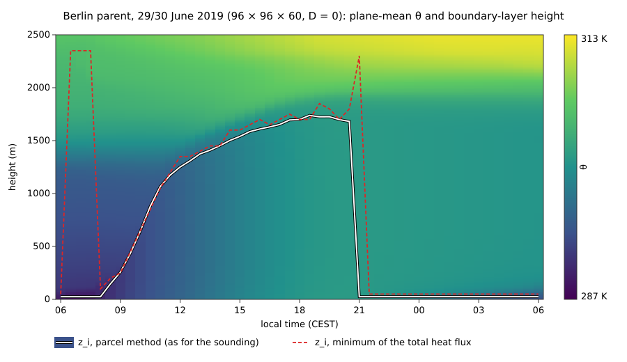
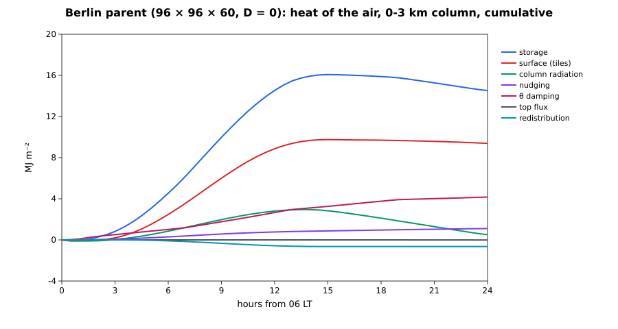

The Berlin parent
The nesting epic (#246) puts the 1 km Alexanderplatz child inside a deep Aeolus parent: an idealised, periodic, 6 × 6 × 3 km diurnal run that supplies the boundary layer the 200–400 m child cannot hold (the standalone child mixes to its lid by 10:00 and warms 25 K, #247). This page is the parent run on its own (N-parent-e, #259): what it is built from, how it is validated, and what it costs. The nest itself — one-way boundary data, two-way feedback, the parent as default of the Berlin run — is N-berlin-nest (#265).
Since NEST-p3 (#483) the parent is a [[domain]] of the model's config, a domain of the model's core, configured in full in its block (the nested Berlin configs) or alone (berlin_parent.toml, berlin_parent_coarse.toml). Code: src/components/urban/parent/components.jl (its physics as components, NEST-p1 #481: the tiled surface, the column radiation), the model's [large_scale_forcing], [sgs] model = "tke", [coriolis], [sponge] and [grid] stretching = "surface_refined", the surface src/components/urban/parent/surface.jl (#249), the run examples/urban/berlin_parent.toml (figures from its output: examples/urban/berlin_parent_figures.jl <run folder>), the checks test/urban_checks.jl (the smoke run and the parent surface) and validation/urban_checks.jl (checks 1–3 and the parent surface against the child; test/berlin_parent.jl, test/berlin_parent_smoke.jl and test/berlin_parent_surface.jl until #320, the by-hand examples/urban/berlin_checks.jl parent until #438) and the 24 h check examples/urban/berlin_parent_lindenberg_check.jl <run folder>, an analysis of a run of berlin_parent_coarse.toml.
Grid
| refinement (rx, ry, rz) | cells | Δx | Δz | |
|---|---|---|---|---|
| default | (2, 2, 4) | 192 × 192 × 53 | 31.25 m | 25 m to 500 m, then × 1.08 per level to 99.6 m at 3 km |
| fallback | (4, 4, 8) | 96 × 96 × 60 | 62.5 m | 50 m uniform |
| uniform alternative | (2, 2, 4) | 192 × 192 × 120 | 31.25 m | 25 m uniform |
| coarse (smoke test, 24 h check) | (16, 16, 8) | 24 × 24 × 38 | 250 m | 50 m to 500 m, then stretched |
(the refinement of the site, 15.625 m × 6.25 m; since NEST-p3 the parent's [grid] gives its cells and spacing, dz_surface, z_uniform, stretching_parameter, dz_max, and the site's block its refinement.)
The parent cell is an integer block of child cells (child: Δx = 15.625 m, Δz = 6.25 m), so the parent's faces fall on child faces. The vertical layout is surface_refined_faces of #151 with the maintainer's decision of 2026-10-05: uniform 25 m up to 500 m, so that the child, deepened to ~400 m, lies entirely in the uniform part. The lateral boundaries are periodic (an idealised parent), with the child's footprint centred. The parent's block takes the date, clock and location of the site in its [radiation] options, θ₀ and f in [dynamics] and [coriolis], the sounding as its own dynamic driver, and the site's idealised profile in [initial] when there is no sounding (NEST-p3: before, ParentConfig(child) derived them from the site's options).
Placement (#265). The parent's [grid] origin is its corner in the site's coordinates — (−2500, −2500) m for the default, the site's block at origin = [2500, 2500], so the site covers parent cells 81–112 in x and y — and its land-use tiles are the land-use table cropped to the box and coarsened to its cells (Urban.landuse_static_tiles, written by AeolusPrep.jl into the parent's static driver, the site's own classes under its footprint; the 1 km parent of the smoke nest is a 32 × 32 crop of the 6 km table, coarsened to 62.5 m). The parent steps adaptively as the root of the nest ([time] cfl, dt_max). The geostrophic wind has one definition, the parent's [large_scale_forcing] (u_g = "sounding": Components.sounding_geostrophic), which the nested site's :geostrophic coupling takes too; without a sounding it is the site's (U_g, V_g). The nest itself is the Nesting section of the Berlin case page.
Physics, all from src or the child
| component | source | notes |
|---|---|---|
| core | BoussinesqSimulation on the StretchedGrid (#151) | moist (θ_v buoyancy), f of the child |
| time step | step_adaptive! with the child's AdaptiveStep constraints; each step step_rk3! | see Time integration |
| SGS | PrognosticSGS.TKEClosure, the child's default :sgs provider | on the stretched grid since this issue (theory); l ≤ κz, Moeng's c_ε factor at the first level, surface value from the tiles' u* |
| initial θ, qv | the child's initial_θ, initial_qv | Lindenberg sounding interpolated to 04 UTC (#247) |
| reference state | hydrostatic_pressure (the child's hydrostatic_check integration) | p̄, ρ̄, Π̄ on the stretched levels, the child's ground pressure and constants |
| geostrophic wind | GeostrophicPressureGradient | sounding u, v at max(z, zg), zg = 1.2 × the largest parcel zi of the launches (1.2 × 1356 = 1627 m); u, v start at Ug |
| nudging | ProfileNudging of θ and qv (#248), τ = 6 h | toward the time-interpolated sounding; weight NudgingWeight above 1.2 × max(1356 m, the running maximum of the diagnosed z_i), 200 m ramp |
| subsidence | Subsidence, form :local (#248) | w_s = −D z; default D = 0 (maintainer decision of 2026-10-06), D = 3 × 10⁻⁶ s⁻¹ is an option that currently diverges during the day (#312); see Subsidence |
| θ damping | ReferenceDamping(:θ, …) (#254) | toward the time-interpolated sounding over the top 25 % (2250–3000 m), α_max = 0.01 s⁻¹; the core's sponge damps u, v, w over the same layer |
| θ top | FluxBC(Γ) (#254) | Γ = ∂θ/∂z of the initial profile at the top face (θ_top_gradient) |
| surface | the tiled mosaic of #249 | build_parent_surface with the tiles' class-to-surface factory (TileClasses, the urban site's defaults); see Surface coupling |
| radiation | the child's column radiation | column_radiation! on the parent's plane-mean column (stitched_column with the stretched layer thicknesses), every 600 s; the sun of the child's clock (solar_position_at) |
| budgets | the domain's energy and water budgets ([checks] or [output] budget variables) | heat of the air $Σ ρ̄c_pΠ̄θΔV/A$ and water of the air $Σ ρ̄q_vΔV/A$ |
Since NEST-p1 (#481) the parent is a Components.Domain whose components are these pieces, and since NEST-p3 (#483) its [[domain]] block enables them: the surface is the :surface slot's TiledUrbanSurface (on the tile form of the parent's static driver) or PrescribedSurfaceFlux, the radiation the :radiation slot's MeanColumnRadiation, the geostrophic wind, nudging, subsidence and θ damping the LargeScale component (its BoundaryLayerTracker holds the running zi of the nudging weight), the SGS [sgs] model = "tke" (the exact wall distance of the stretched grid, the bottom only; the tiles' u* as its surface value), the [coriolis] and [sponge] components and the fixed-gradient θ top of `[boundaries] thetatop = "initial_gradient"`. Against the ParentCase run that the pipeline replaced the parent differs at round-off (a 24 × 24 × 38 tiled parent, six matched adaptive steps: |Δθ| ≤ 3e-9 K, |Δu| ≤ 2.3e-7 m/s): its forcing takes the step's mean window instead of the core's substage clock, and the Coriolis force and the sponge are components, not the core's own terms.
Nothing in the parent is a copy. Four pieces of the child were factored so that both domains call one function: the column radiation (column_radiation_solver, stitched_column, column_radiation!; since ONE-e #454 the module Aeolus.ColumnRadiation), the hydrostatic integration (hydrostatic_pressure; since ONE-e #454 in Aeolus.Anelastic), the fixed-gradient top (θ_top_gradient(cfg; H, dz)), and the total heat-flux profile (mean_heat_flux, any core, any grid).
Surface coupling
Every 60 s each tile of each column is stepped (step_parent_column!) under the parent's own air at the tile's forcing level (the first level above the column's mean roof height for built tiles, the first level for park and water; #249), with the downwelling shortwave and longwave of the last radiation call. A tile forced at level $k_i$ releases its heat, vapour and momentum flux into the canopy levels below it, $1 … \max(1, k_i − 1)$, uniformly per volume over their depth $Z_i$: $\dot θ_k = f_i H_i/(Z_i ρ̄_k c_p Π̄_k)$ (the child's ref_θ_per_heat conversion), $\dot q_k = f_i E_i/(Z_i ρ̄_k)$, and the stress as an implicit deceleration along the wind (apply_parent_drag!, post-predictor). The held sources are delivered exactly over the time each surface step covers (a step that crosses the end of an interval takes the next surface step's sources for the rest), so the air receives what the tiles gave away: the smoke test checks the ledger's surface term against the delivered sources to 1e-10.
The tiles start at the child's Ts0 = 285 K, 3.6 K below the 06:00 air, so the first surface steps cool the air (as in the child).
Time integration
The child steps the forward-Euler projection step! (AdaptiveStep, Courant number 0.5). With the core's centred advection that step is unconditionally unstable for advection; the child's SGS diffusion keeps it in check, the parent's does not. Measured with Euler: at the 31.25 m grid a cold anomaly at the second level grew to −17 K within 140 s (max |w| 8 m/s at 06:02 LT), and both 24 h runs at 62.5 m failed after 5 h (step_adaptive! hit its step floor on the divergence check). The parent therefore takes step_rk3! (SSP-RK3, a projection per stage, stable for centred advection up to a Courant number of √3) under step_adaptive!, at a Courant number of 0.9 (below 1 so that the positive TKE transport keeps its guarantee). The same 31.25 m start then has max |w| = 0.6 m/s after 420 s. The forcings are booked with the stage weights (1/6, 1/6, 2/3) of the Shu–Osher form. stepper = :euler remains an option.
Ledgers
The heat of the air is attributed per stage: (:surface_flux, :tiles), (:column_tendency, :column_radiation), and inside the dynamics (:dynamics, :nudging), :subsidence, :damping, :top_flux (booked from the stage-weighted tendency sums of the accepted step) with the rest split into :transport (zero over the column to round-off) and :redistribution (Boussinesq transport conserves $Σθ$, not $Σρ̄Π̄θ$; #253). The water ledger has the same structure. In every run and test of this issue the closure is at round-off (≤ 1e-15 of the largest term).
Validation (reduced resolution, measured)
Checks 1–3 are in validation/urban_checks.jl (idealised, 6–7 simulated hours; a validation run since the validation split, full tier since #438, run by hand in examples/urban/berlin_checks.jl after #320 removed the Berlin test suite, before which they were test/berlin_parent.jl). Check 5 never used the parent case, only the two cores and the TKE closure: it is the module test validation/anelastic_cbl.jl. Checks 4 and 6 need a 24 h simulation and were moved out of the suite to examples/urban/berlin_parent_lindenberg_check.jl (run by hand): the maintainer skipped all 24 h validation runs in this issue and deferred them to #315, after the KernelAbstractions port. Their numbers below were measured on the coarse grid with the epic's original D = 3 × 10⁻⁶ s⁻¹, before the default became D = 0.
- Encroachment (Tennekes 1973; Stull 1988, Ch. 11). 32 × 32 × 53 (Δx = 125 m), Q(t) = 0.15 sin(πt/12 h) K m s⁻¹ into Γ = 3 K/km, no forcing. zi (minimum of the total heat flux) against ``zi^2 = 2(1 + 2A)\int Q\,dt/Γ`` with A = 0.2: 786 m against 751 m (+4.7 %) at 3 h, 1407 m against 1387 m (+1.4 %) at 6 h. Entrainment flux ratio (mean of 17 profiles, 2–6 h): −0.130.
- Heat budget. The closure of ∫ρ̄cpΠ̄(θ − θinit) against the booked terms is 6.8e-16 of the largest term at every output; the θ damping below z_i is exactly zero (the damping layer starts at 2250 m).
- Wangara Day 33 (
examples/sbl/data/wangara_day33.csv: the 09 LT sounding of Clarke et al. 1971, data p. 227; Hicks' 1981 surface fluxes; the forcing $⟨wθ⟩_s = 0.216\cos(π(t_h − 13)/11)$ of Nakanishi & Niino 2009). The observed zi(t) of Clarke et al. could not be obtained (the report is not online), so the reference is the MYNN zi of Nakanishi & Niino (2009, Table 1), clearly labelled as a model value in the data file. z_i at 12, 14, 16 LT: 1078, 1315, 1507 m against 1000, 1240, 1400 m (+7.8, +6.1, +7.6 %). - Lindenberg, 29/30 June 2019 (coarse grid, 24 × 24 × 38, 24 h, every forcing on, D = 3 × 10⁻⁶ s⁻¹; not in the suite, see above). Parcel zi at 14 LT 1332 m against 1183 m from the 12 UTC sounding (+12.6 %); ⟨θ⟩ at 500 m and 1 km +0.12 K and −0.17 K from the sounding; at 03 LT the residual layer between 300 m and 0.8 zi,max = 1223 m has a bulk gradient of 0.26 K/km; the night (20–05 LT) nudging is 8.5 W m⁻² against 299 W m⁻² of daytime (10–16 LT) surface heat flux (ratio 0.028).
- Core sensitivity. Boussinesq against anelastic (Lipps–Hemler, the isentropic-profile reference), uniform 24 × 24 × 40 grid, 5 h CBL (Q = 0.25 K m s⁻¹, Γ = 3 K/km) to ~2 km: zi 2100 against 2325 m (Δzi/zi = +0.107), mixed-layer θ +0.23 K when measured in #259; re-measured on master on 2026-10-07 (`validation/anelasticcbl.jl`): 2175 against 2250 m (+0.034, one 75 m level), θ +0.22 K. The anelastic CBL is deeper and warmer because the same kinematic flux heats air whose density falls with height.
- Robustness. The coarse 24 h run of check 4: no NaN, no retry, 11 140 steps, dt mean 7.8 s (≤ 10 s, the cap; the shortest steps land on output times).
The parent smoke run (test/urban_checks.jl; test/berlin_parent_smoke.jl until #320): 12 steps with every parent forcing on, heat and water closures at round-off, the surface term equal to the delivered sources.
Cost
Measured single-threaded on the shared 24-core development machine (wall seconds per simulated hour; the dynamics is 77–95 % of it):
| grid | cells | measured over | s per simulated hour | 24 h |
|---|---|---|---|---|
| default, stretched | 192 × 192 × 53 | 06–07 LT, 1238 steps, mean dt 2.91 s | 2891 | ≈ 19 h (extrapolated) |
| uniform 25 m alternative | 192 × 192 × 120 | 06–06:30 LT, 625 steps, mean dt 2.88 s | 6899 | ≈ 46 h (extrapolated) |
| fallback, uniform 50 m | 96 × 96 × 60 | the full 24 h, D = 0, 19 299 steps, mean dt 4.48 s | 316.6 | 7598 s |
The stretched default is 2.4 × cheaper than the uniform 25 m grid at the same Δz below 500 m. The default-grid figures are extrapolated from the first simulated hour, when the boundary layer is shallow; the measured full-grid 24 h run, and its threaded cost, are #315. The full-grid cost probe and the 24 h runs on the default grid were skipped in this issue at the maintainer's request.
Subsidence
The epic planned a large-scale divergence D = 3 × 10⁻⁶ s⁻¹ (ws = −D z, −4.5 mm/s at 1.5 km). With it the 24 h run fails: `stepadaptive!reaches its step floor (dtmin` = 0.01 s) on the divergence check during the convective day (#312 records the failure at 12:00 LT, zi ≈ 1.1 km; the surviving fallback-grid log of the same configuration ran to 18:30 LT, z_i 1550 m, and failed before the 19:00 output). The parent default is therefore D = 0 (maintainer decision, 2026-10-06), and divergence = 3e-6 stays a documented option that is currently unstable. The smoke test runs 12 steps with it so that the forcing and its ledger term stay exercised. The cause (#312) and the final choice of D (#315) are open.
Exceptions and limitations
- Periodic lateral boundaries: an idealised parent. The mesoscale parent (ERA5 or ICON-D2 through the pluggable boundary-data interface) is #58.
- Advection is the core's centred flux form (θ, qv, momentum); the WENO schemes of the child are
RegularGrid-only. The TKE is transported with the flux-limited centred form. - Unresolved buildings: their heat, vapour and stress enter the canopy levels below each tile's forcing level uniformly; the parent has no building energy model of its own (the tiles are the child's class surfaces).
- The case sun was
utc_offsethours early in the child before this issue (local hour passed as UTC); fixed here for both domains, see the Berlin case page. - Wangara z_i is compared with a model reference (MYNN), not with the observations.
Measured 24 h run
The fallback grid (96 × 96 × 60, Δx = 62.5 m, Δz = 50 m), D = 0, every other forcing on, 06:00 LT 29 June to 06:00 LT 30 June 2019: the urbanparent run of `berlinparent.tomlat refinement (4, 4, 8), uniform (today a parent[[domain]]on 96 × 96 × 60 cells of 62.5 m × 50 m with its own tile driver) (until #438examples/urban/berlinparentdiurnal.jl fallback`). It completed in 7598 s wall (19 299 steps, dt 0.03–10 s, no retry). The 24 h run on the default grid, and with it the final validation of the parent, is deferred to #315.

- Boundary layer. Parcel zi 1251 m at 12 LT, 1453 m at 14 LT, 1610 m at 16 LT, maximum 1739 m at 18:30 LT; at 14 LT this is 23 % above the 1183 m of the 12 UTC Lindenberg sounding (the coarse run with D = 3 × 10⁻⁶ s⁻¹ was 12.6 % above it: subsidence caps the CBL, and without it the CBL grows deeper). After 21 LT the parcel zi drops to the lowest level and a ≈ 50 m stable layer (minimum heat flux) forms. The minimum-flux z_i jumps to 2.3 km before 08 LT and at 21 LT, when the heat-flux profile has no convective minimum; those spikes are a property of the diagnostic, not of the flow.
- Heat of the air, 24 h means over the 0–3 km column (W m⁻²): storage 168.1 = surface 108.7 + radiation 5.9 + θ damping 48.3 + nudging 12.8 + redistribution −7.5 + top −0.09; closure 0 over the column and ≤ 1.4e-14 W m⁻² in every layer and window reported. At night (20–05 LT) the column loses 36.6 W m⁻²: radiation −68.0, surface −6.6, nudging +7.3, damping +31.1. The damping and the nudging carry the warming of the observed free troposphere (the soundings of the 29th and the 30th differ by 3.7–6.5 K, the warm-air advection of the heat wave) into the box above 1.2 z_i and above 2250 m.

References
- Tennekes, H. (1973). A model for the dynamics of the inversion above a convective boundary layer. J. Atmos. Sci., 30, 558–567.
- Stull, R. B. (1988). An Introduction to Boundary Layer Meteorology, Kluwer, Ch. 11.
- Deardorff, J. W. (1974). Three-dimensional numerical study of the height and mean structure of a heated planetary boundary layer. Boundary-Layer Meteorol., 7, 81–106.
- Clarke, R. H., Dyer, A. J., Brook, R. R., Reid, D. G. & Troup, A. J. (1971). The Wangara Experiment: Boundary Layer Data. CSIRO Div. Meteorol. Phys. Tech. Paper 19.
- Hicks, B. B. (1981). An Analysis of Wangara Micrometeorology. NOAA Tech. Memo. ERL ARL-104.
- Nakanishi, M. & Niino, H. (2009). Development of an improved turbulence closure model for the atmospheric boundary layer. J. Meteorol. Soc. Japan, 87, 895–912.
- Heinze, R. et al. (2017). Evaluation of large-eddy simulations forced with mesoscale model output for a multi-week period during a measurement campaign. Atmos. Chem. Phys., 17, 7083–7109.
- Heus, T. et al. (2010). Formulation of the Dutch Atmospheric Large-Eddy Simulation (DALES). Geosci. Model Dev., 3, 415–444.
- Shu, C.-W. & Osher, S. (1988). Efficient implementation of essentially non-oscillatory shock-capturing schemes. J. Comput. Phys., 77, 439–471.